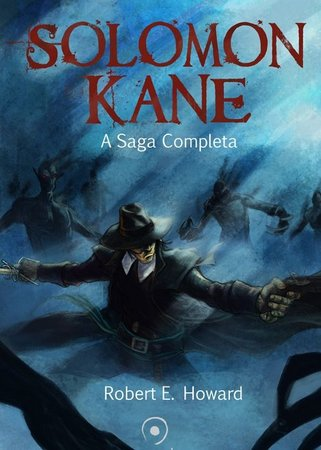
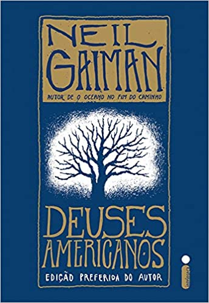

| Veja os melhores livros de Fantasia! | |
|---|---|

|
As Crônicas de Gelo e FogoGeorge R. R. MartinSinopse: Baseada em mitos, lendas, contos de fadas e religiões pagãs, a alta fantasia se passa em um mundo com regras diferentes do mundo real, onde ocorrem coisas que não poderiam acontecer na realidade. Os problemas a serem resolvidos são grandiosos e envolvem o destino de muitos personagens, ou até do mundo. "As crônicas de gelo e fogo" com os cinco livros já escritos - "A guerra dos tronos", "A fúria dos reis", "A tormenta de espadas", "O festim dos corvos" e "A dança dos dragões". Saiba mais |
|  |
Solomon KaneRobert E. HowardSinopse: A Saga Completa é uma obra na qual o leitor terá oportunidade de conhecer diversas aventuras de Solomon Kane, o famoso puritano inglês. Histórias repletas de fantasia, seres demoníacos e misteriosos, além de batalhas épicas. Após o lançamento de Conan, o bárbaro, a Generale traz para o público brasileiro uma coletânea de contos de Robert E. Howard sobre Solomon Kane. Neste livro, são também publicadas cartas do arquivo pessoal do autor, incluindo a correspondência enviada por seu pai a H. P. Lovecraft, um tocante relato sobre o suicídio de Howard. Conheça as histórias que inspiraram grandes autores e roteiristas e que serviram de base para o filme Solomon Kane - o caçador de demônios. Saiba mais |
|  |
Deuses AmericanosNeil GaimanSinopse: Deuses americanos é, acima de tudo, um livro estranho. E foi essa estranheza que tornou o romance de Neil Gaiman, publicado pela primeira vez em 2001, um clássico imediato. Nesta nova edição, preferida do autor, o leitor encontrará capítulos revistos e ampliados, artigos, uma entrevista com Gaiman e um inspirado texto de introdução. A saga de Deuses americanos é contada ao longo da jornada de Shadow Moon, um ex-presidiário de trinta e poucos anos que acabou de ser libertado e cujo único objetivo é voltar para casa e para a esposa, Laura. Os planos de Shadow se transformam em poeira quando ele descobre que Laura morreu em um acidente de carro. Sem lar, sem emprego e sem rumo, ele conhece Wednesday, um homem de olhar enigmático que está sempre com um sorriso no rosto, embora pareça nunca achar graça de nada. Saiba mais |